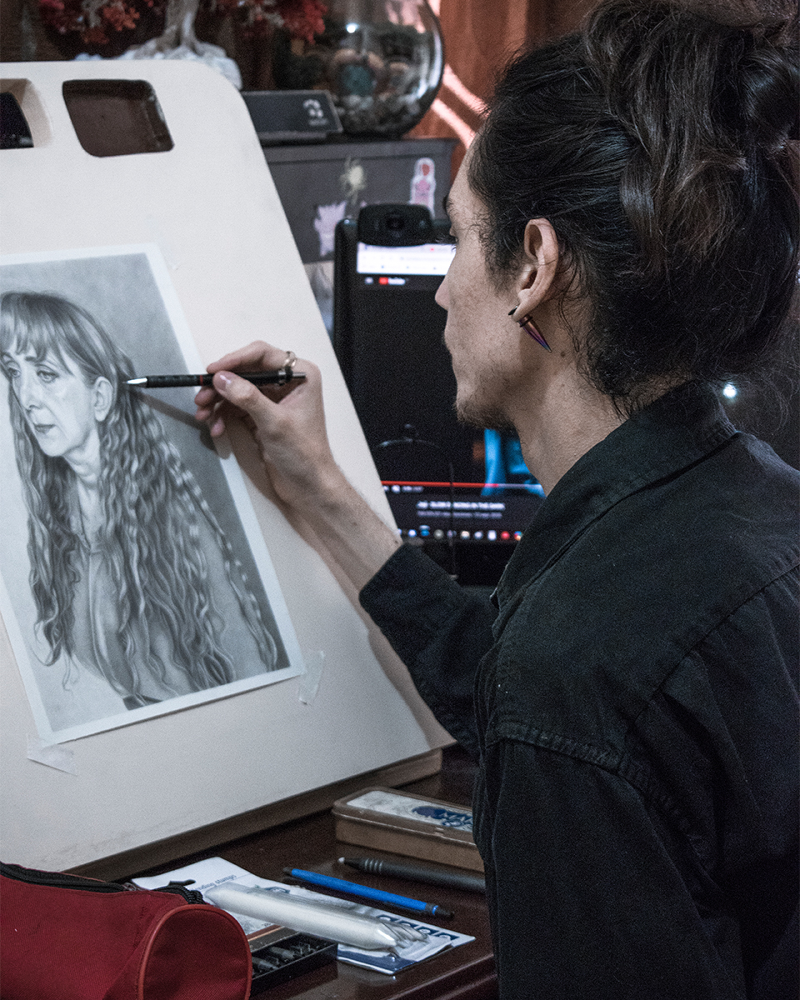

Jonathan Procarioni
El Salvador, 2 de enero de 1995
Nacido en Santa Ana. Ingeniero Civil graduado en la Universidad Católica de El Salvador (UNICAES) en el año 2018. Desde el año 2012 a la fecha ha mostrado un gran interés en las artes plásticas, principalmente en el dibujo y la pintura, especializándose en técnicas secas como el grafito, y en técnicas húmedas como la acuarela y acrílico, siendo los retratos, y los movimientos del realismo y el surrealismo su principal objeto de inspiración. Impartió un curso de dibujo al grafito en la UNICAES en el año 2016, así como participante de exposiciones en dicha universidad. Ha participado en numerosas exposiciones colectivas a nivel nacional, una de ellas la exposición “del agua al papel” llevada a cabo en el Teatro Nacional de Santa Ana, como parte del festival granadino del año 2014, y en la XXX, XXXI, XXXII, XXXIII Exposición Nacional de Artes Plásticas, llevada a cabo en el Centro de Artes de Occidente (CAO) en los años 2016, 2017, 2018 y 2019 respectivamente. Participo en la exposición en homenaje al maestro Mauricio Mejilla, que se llevó a cabo en la Universidad de El Salvador (UES) en el año 2019. Ha participado en las exposiciones de tinta china y acuarela “Inspiraciones del alma”, llevadas a cabo por el colectivo de artistas nacionales VOLARTE, en los años 2017, 2018 y 2019. Así mismo, forma parte de la exposición de acuarela y tinta china “Arte en el parque”, que se exhibió en el parque Cuscatlán en la ciudad de San Salvador en el año 2019. Participo en la exposición titulada “Transito y permanencia”, realizada en la sala de exposiciones San Jacinto, Ex casa presidencial. En enero de 2020 participó en una exposición en solitario de Dibujo y Pintura en el Museo de Anatomía de UNASA en Santa Ana. Participó en la exposición virtual colectiva llamada "libreta de dibujo", organizada por la secretaria de arte y cultura de la Universidad de El Salvador (UES) en mayo de 2020. Actualmente es profesor de dibujo y pintura en la Escuela de Música y Arte de Santa Ana (EMA) desde el año 2017.
